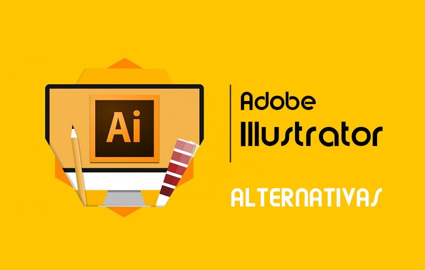
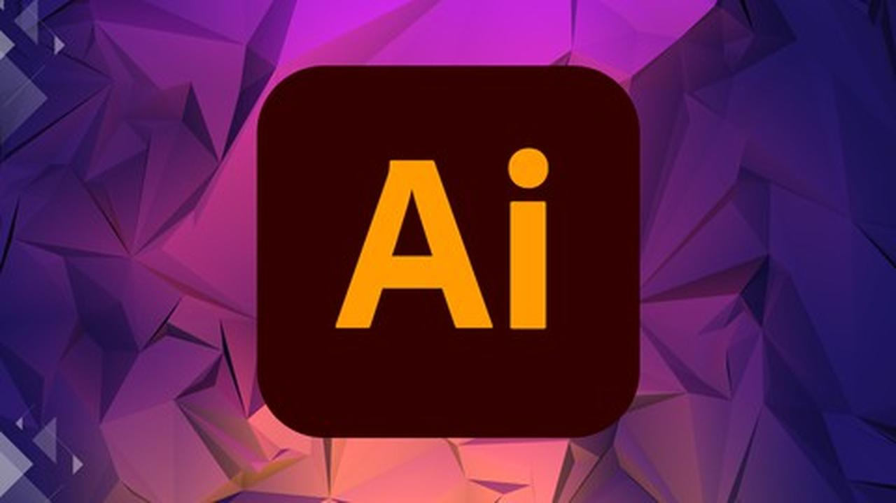
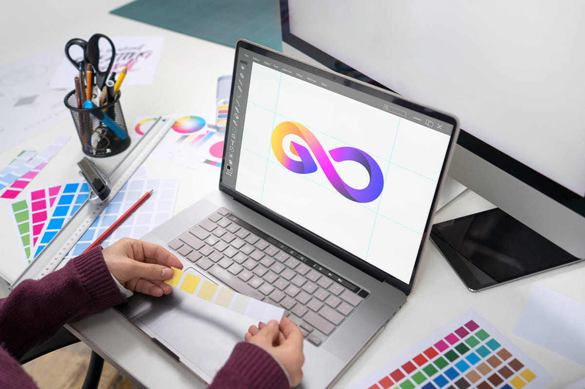

Domina Adobe Illustrator y desata tu creatividad
Este curso está diseñado para enseñarte desde los fundamentos básicos hasta los aspectos más avanzados de Adobe Illustrator.
- Introducción a Illustrator
- Herramientas y técnicas de dibujo
- Creación de gráficos vectoriales
Aprende a navegar por la interfaz de usuario, manejar las herramientas básicas y configurar tus espacios de trabajo para proyectos de diseño gráfico.
Domina las herramientas de pluma, pincel y otras herramientas de dibujo para crear obras de arte vectorial precisas y detalladas.
Explora las técnicas avanzadas para la creación de gráficos vectoriales, incluyendo la manipulación de textos, símbolos y efectos avanzados.